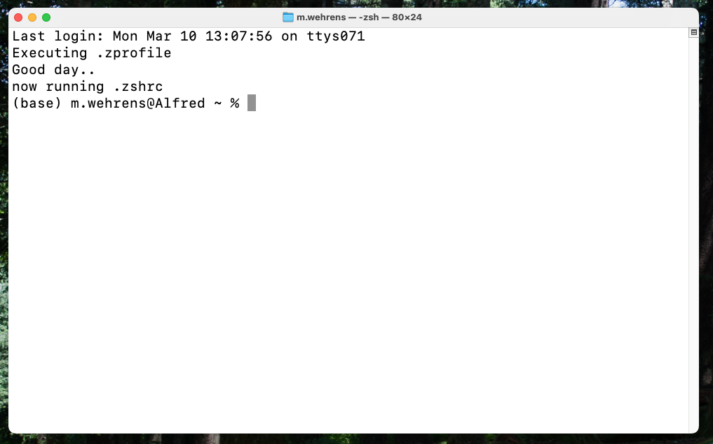
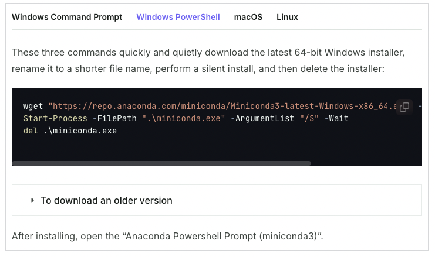
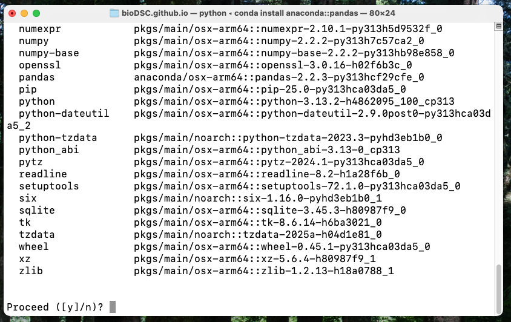
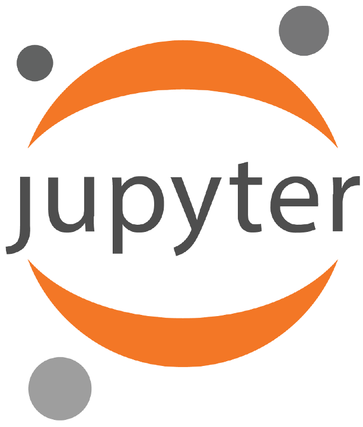
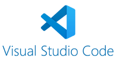
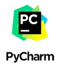

Installing Python Software
Summary
This section gives a brief summary, see below for more details.
Install miniconda through the official website, and install either:
- Jupyter labs, by typing the following in your terminal:
conda install conda-forge::jupyterlab - Spyder, by typing the following in your terminal:
conda install -c conda-forge spyder
Plus:
- Additional libraries you need, by using google and typing in your terminal:
conda install XXXX
Background: what you need.
To be able to write Python code and execute it, it is convenient to install several types of software:
1: Python itself
As explained during our workshops, Python itself is a software that interprets written computer code, and uses that to make the computer do things. Sometimes Python is already installed on your computer, but often you need to install it.
Python makes use of “libraries” (pre-written code with functions for specific tasks), that you likely need to download/install as well.
2: A text editor dedicated to writing Python code
It is convenient to also install another piece of software, in which you can write Python code, and which also allows you to “send” the script towards the actual Python software.
This way you can write Python code in a pleasant way, and also run it immediately. In practice, you’ll only interact with this editor.
3: Software installing-software.
Installing software to manage software installation sounds perhaps a bit complicated, but it’ll make your life easier.
Installing Python, its libraries, and code editors, comes challenges, such as:
- It is tedious to install all these things manually.
- You might need a set of libraries for a specific task, which have installation requirements that exclude you from installing other libraries that you might need for another task.
These challenges are adressed by software that manages such “dependencies” and “conflicts”.
So, how to do it:
I’ll try to keep this brief, so I’ll immediately go to our recommendations on what to install and how to do it.
Step 1: open the terminal
During this process we’ll be using the “terminal”. This is a computer program built-in in all operating systems (Windows, MacOS, Linux).
You can type commands here, press enter, and they will be executed. This allows you to interact with your computer in a more “advanced” way. It is necessary for the installation process we recommend.
Open the terminal window by:
- MacOS: open the “terminal” app, e.g. by using the launchpad or spotlight search (press CMD+SPACE). See also this link
- Windows: open the “powershell”. This can be done via the menu. See also this link.
- Linux: open the terminal. See also this link.
It should look somewhat like this:

Having started the terminal, we’re now good to go.
Step 2: Install software-installing software, ie “MiniConda”
The software installing-software I was talking about, is Conda. You have:
- Miniconda. We’ll use this. It’s very minimal.
- Anaconda. We won’t use this. It’s easier to install and use, but there have been licencing issues even for universities.
ChatGPT: “Conda is a package and environment manager that allows you to easily install, manage, and isolate software dependencies, making it especially useful for scientific computing and reproducible research.”
How to install Conda
Go to: https://www.anaconda.com/docs/getting-started/miniconda/install
This website explains which commands you have to type in the terminal to complete the installation of miniconda.
At this website, go to “Quickstart install instructions”, and using the tabs on the install instructions, go to the operating system you have on your computer. Follow the instructions there. You need to copy the lines (one by one) in the black box, which are instructions for your terminal. You can paste them (one by one) in your terminal, and press enter.

Optional: learn to use environments.
Read more about conda environments here: https://docs.conda.io/projects/conda/en/stable/user-guide/tasks/manage-environments.html
How to install Python software using Miniconda
1. Open a terminal with Miniconda activated
- In windows, after installing Miniconda, open the “Anaconda Powershell Prompt (miniconda3)”.
- On a Macbook, if you have followed all the instructions, (close and re-)open the terminal. It should now display “(base)” in front of your username (see screenshot from my terminal above).
2. Install python and libraries.
Python will be automatically installed in step 3. However, libraries often need to be installed separately. You can do this at any point you like, whenever it turns out you need a library that you haven’t installed yet.
This can be done easily using miniconda. To install something using Conda, simply open the terminal and type the following command in the terminal, and press enter.
conda install XXXXWhere XXXX is the library you want.
You sometimes need to specifiy on which online “database” (“channel”) software is found. You also need to know the very specific name of the package.
To address both these questions, it is easiest to just google for “conda install XXX”, where XXX is the package you want. For example, to install pandas, after Googling, we end up at this page, and see the installation command is:
conda install anaconda::pandasThe part anaconda:: specifies further where to find pandas installation files.
Simply copy that code into your terminal, and press enter. You will see something like this:

Type a “y” and press enter to proceed. This means all the listed libraries will be installed. They are needed because in this case Pandas requires these other libraries to be installed in order to run. This is usually the case.
3. Choose the editor software you want and install it
To work with Python, there are multiple options for software to write scripts and run them using Python. I’ve listed them below.
| Software | Description |
|---|---|
| Jupyter  |
(+) Write code and text in blocks, and see the output directly below in one document. (-) Not suitable for large amounts of code (-) Adds extra layer complexity. |
| Spyder |
(+) Easily write simply .py files, inspect parameters. (+) Rstudio or MATLAB like IDE. (-) Lacks some modern features. (-) No co-pilot integration. |
| Visual Studio Code  |
(+) ±Industry standard, has most advanced features. (+) Understands different conda environments. (+) Plugins for many features. (-) Very counter-intuitive to use. Makes it difficult to use. |
| PyCharm  |
(We don’t have much experience with this, but it’s also good and often used.) |
For the workshop, we used Jupyter notebooks. We also recommend Spyder.
The installation of both of these can be done through Conda. See below.
Installing Jupyter using Conda
Jupyter can be installed using Conda. (On the official website they say use something called “pip” (link), but we recommend conda.)
Install jupyter similar as to how you installed other python libraries (see section 2 above):
conda install conda-forge::jupyterlab(Source.). Copy and paste this into a terminal which has conda activated, and press enter to run. (See above.)
To run Jupyter, simply type the following command in your terminal and press enter:
jupyter labThis will start Jupyter running on your local computer.
Installing spyder using Conda
Spyder can be installed using Conda.
Install Spyder similar as to how you installed other python libraries (see section 2 above). It is also described in detail at: https://docs.spyder-ide.org/current/installation.html
Paste the following command in your terminal (and hit enter) for an extended installation:
conda install -c conda-forge spyder numpy scipy pandas matplotlib sympy cythonPaste the following command in your terminal (and hit enter) for an minimal installation:
conda install -c conda-forge spyder(Note: the official installation instructions use “environments”, if you use the official instructions, read carefully about using environments.)
To run, simply open a terminal, and type (+ hit enter afterwards):
spyderInstalling VS Code
Follow the instructions at: https://code.visualstudio.com/
Installing PyCharm
Follow the instructions at: https://www.jetbrains.com/pycharm/
A final note about this blog
These installation instructions are intended for relative novices to using Python. For intermediates and experts, we recommend to use different conda environments when working with Python. However, for novices, we think it’s better to do everything in the base environment.
We do recommend people reading up on how to use conda environments. And while I’m at it, I also recommend people reading up on version tracking using Git and Github. But that’s another topic.